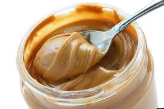

Peanut Buttter

Description
Peanut butter is the best invention of humanity. The best dried fruit in spreadable form, allowing a plethora of great dishes, only limited by your imagination.
Ingredients
Steps
- Roast them peenuts on a pan for a few minutes
- Put them all in a food processor. If you don't have one, shame on you, but you can still use a blender
- Process (or blend...) the p-nuts until desirable consistency
- Put that in a jar and boom, homemade peanut butter, not that sugary trash you all buy in stores. Enjoy, and thank me later
Return to Recipes